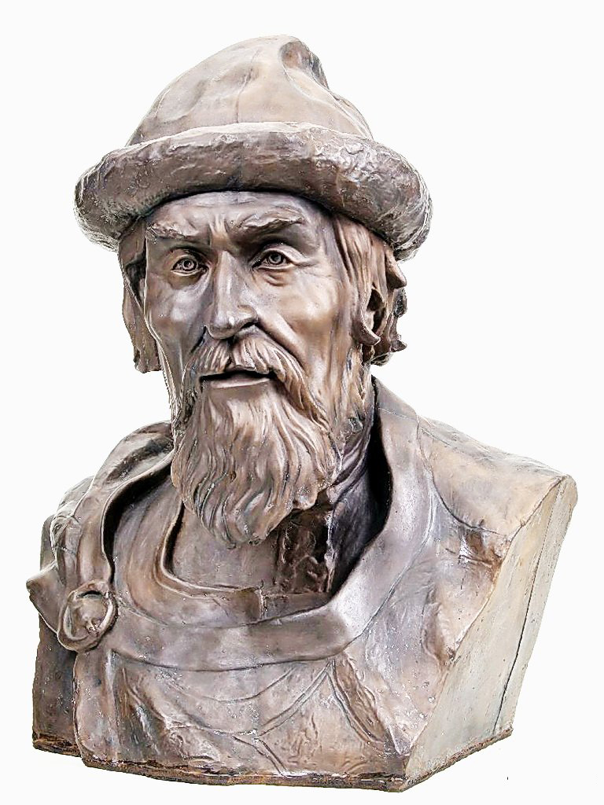

11 век.
Государство во второй половине 10-го и в 11-м веке
Во второй половине 10-го в. продолжали укреплять свои позиции киевские князья, сумевшие в годы правления Святослава Игоревича (964-972) подчинить себе все восточнославянские племена. Переход к одной религии сопровождался становлением нового типа государственности на Руси. Православие задавало общий нормативный порядок для интеграции Древнерусского государства. Церковь оказывала большое влияние на политику киевских князей и государственное управление, на формирование древнерусского права. Особенность геополитического положения Древней Руси была в том, что она граничила как с западно-христианской цивилизацией, так и с исламским миром, иудейским Хазарским каганатом и степными кочевниками - язычниками. Основным направлением внешней политики Древнерусского государства было «собирание» земель в единое территориальное целое, а также защита границ, обеспечение государственных интересов в международной торговле, организация завоевательных походов. Ведя непрерывные войны, Древнерусское государство укрепило свои позиции в Причерноморье, Подонье, Прикубанье и на Тамани, где было создано Тмутараканское княжество. В результате похода киевского князя Святослава был разгромлен Хазарский каганат, который облагал данью Русь до середины 10-го в. Владимир I, продолжая политику Святослава, восстановил влияние на Северном Кавказе, посадив на княжение в Тмутаракани своего сына Мстислава.
После смерти Владимира в 1015 г. началось время междоусобиц. Его сын Святополк, убив своих братьев Бориса, Глеба и Святослава, объявил себя великим князем киевским. Но в 1019 г. оставшийся в живых брат Ярослав при поддержке варягов разгромил дружину Святополка на реке Альте и занял киевский великокняжеский престол. Именно на период правления Ярослава Мудрого пришелся расцвет русского государства. Одним из опаснейших его соперников был Мстислав Тмутараканский, который правил на левом берегу Днепра. Ярославу удалось осуществить полное объединение земель только после смерти Мстислава. При Ярославе Мудром Русь становится одним из сильнейших государств Европы. Ярослав совершает успешные походы в прибалтийские земли, где закладывает г. Юрьев. Он предпринимает военные походы против Византии, добивается победы над печенегами в битве под Киевом в 1036 г. Государственные реформы Ярослава Мудрого выразились в принятии первого письменного свода законов - «Русской Правды», которая регулировала общественные отношения, устанавливала порядок разрешения различных споров и возмещения нанесенного ущерба. Этими законами, в частности, регулировались взаимоотношения между княжескими дружинниками и населением Новгорода, предусматривались наказания за побои, увечья, укрывательство преступника, конфискацию имущества, изгнание в случае тяжких преступлений. «Русская Правда», опиравшаяся на нормы права и прежнее законодательство, вошла в историю Руси как сложный и значимый для своего времени юридический документ. При Ярославе произошел значительный рост экономики. Заселялись новые места, воздвигались города. Были построены замечательные соборы святой Софии в Киеве и Новгороде, основаны многочисленные монастыри, наиболее значительным из которых является Киево-Печерская лавра, основанная в 1051 г. Первым русским митрополитом был Илларион. Монастыри стали центрами просвещения и культуры, в них создавались русские летописи, развивалась грамотность, распространялось христианство. В Новгороде было основано первое училище. Для укрепления влияния церкви десятая часть введенного князьями оброка (церковная десятина) отдавалась на нужды церкви. Существенная черта политики Ярослава - укрепление власти князей.
Русь в 11-м веке
Территориальное деление и государственное устройство Руси в 11-м в.
В 10-м в. началось объединение разрозненных славянских племен в единое государство, выделился административный центр - Киев. В 11-м в. этот процесс получил новый виток развития: государство, сформированное из бывших племен, все больше соединялось под властью центра и киевского князя, территории Руси значительно расширялись, управление стало более централизованным, начала выделяться верхушка общества. Хотя Русь больше не была союзом племен, а стала уже по-настоящему цельным государством, население Руси все еще было достаточно пестрым - в его состав входили не только славянские племена, но также финны и прибалты. Русская территория в 11-м в. простиралась от Ладожского озера до устья реки Роси, а также от правобережного Днепра до реки Клязьмы (там был основан г. Владимир-Залесский и позднее княжество) и до верховья Западного бута (г. Владимир-Волынский и Волынское княжество). Русь также сохранила за собой территории Тмутаракани. Сложная ситуация была с Галицией, где проживали хорваты: эти территории постоянно переходили из-под влияния Польши под влияние Руси и обратно. Однако в целом Русь постепенно расширялась и представляла собой довольно мощное государство. Хотя разноплановое и этнически пестрое население вошло в состав Киевской Руси, русский этнос сам по себе пока только начал формироваться и окончательно не отделился: племена уже начали смешиваться друг с другом, но пока устойчивых этнических признаков не было. Кроме того, в некоторых частях государства все еще жили племена, которые не очень охотно отходили от собственных традиций и верований и не желали сливаться с традициями, которые навязывала Русь. Большая часть Руси начала культурно объединяться под влиянием христианства, но все еще оставалось довольно много язычников. Процесс перехода к новой религии завершился лишь в 12-м в. Главным механизмом объединения земель была государственная власть и администрация. Главой государства считался великий киевский князь, ему подчинялись местные князья и управители. Постепенно начинали формироваться и прочие государственные органы, такие как вече - народный совет, сход. Древняя Русь находилась на стадии формирования целостного государства с крепкой системой управления.
Религия и общество Древней Руси в 11-м в.
В 988 г. произошло Крещение Руси, Русь приняла христианство. Это важное событие оказало огромное влияние на все, что происходило с народом в дальнейшем. Вместе с христианством и христианской идеологией, моралью начали появляться новые типы общественных отношений, новые веяния, церковь стала политической силой. Князь становился не просто управителем, но наместником Божьим, что значило, что он должен заботиться не только о политической жизни, но и о духовности и нравственности своего народа. У князя появляется своя дружина, которая служит для его охраны, однако постепенно ее функции начинают расширяться. Дружина делится на высшую (бояре) и низшую (отроки). Именно дружина в дальнейшем составит основу нового слоя общества - высшего слоя, обладающего определенными привилегиями. Начинается процесс расслоения в обществе, появления знати, деления на богатых и бедных. Именно в 11-м в. с развитием экономических и торговых отношений и ростом числа знати начинают формироваться основные принципы феодального строя, который уже в 12-м в. прочно утвердится как основной государственный строй.
Культура Руси в 11 в.
В культуре и архитектуре, как и в других сферах жизни, также начинается новый виток развития, связанный с христианизацией. В живописи начали появляться библейские мотивы, зарождается русская иконопись. Начинается также активное строительство церквей - именно в этот период был построен знаменитый Софийский собор в Киеве. На Руси начинает активно распространяться грамота, образование и просвещение, строятся школы.
Краткая биография князя Ярослава Мудрого

В годы правления Ярослава Мудрого (1019-1054) государство Киевская Русь достигло своего расцвета. Оно стало одним из сильнейших в Европе. Деятельность Ярослава Мудрого была направлена на то, чтобы укрепить не только стольный город, но и все его обширные владения. При нем было заложено несколько новых городов. Благодаря разумной внешней политике Ярослава Мудрого авторитет государства на международной арене значительно вырос. Удачлив оказался князь и в военных делах. Успешными были совершенные им походы на Польшу, княжество Литовское, в земли, принадлежавшие финским народам. Одной из наиболее важных для Руси была победа над кочевниками-печенегами в 1036 г.
В последний раз Киевская Русь при Ярославе Мудром столкнулась с Византией. Конфликт завершился подписанием договора о мире, подкрепленного династическим браком. Сын князя Всеволод женился на византийской принцессе Анне. Ярослав использовал династические браки в качестве средства укрепления мира. Другие сыновья Ярослава Владимировича Мудрого: Святослав, Вячеслав и Игорь - женились на немецких принцессах. Старшая дочь Елизавета была супругой Гаральда, норвежского принца. Анна, вторая его дочь, вышла замуж за короля Франции Генриха 1-го, а Анастасия вступила в брак с венгерским королем Андреем 1-м. Реформы Ярослава Мудрого охватили практически все сферы жизни общества. Великий князь придавал большое значение просвещению, и внутренняя политика Ярослава Мудрого была направлена на повышение образованности и грамотности. Князь построил училище, где мальчиков обучали «церковному делу». При Ярославе впервые на Руси появился русский по происхождению митрополит. Для укрепления позиций церкви во владениях Ярослава была возобновлена выплата десятины, ранее установленной Владимиром. Бурная деятельность князя заметно изменила Киевскую Русь. Строились каменные монастыри и храмы, бурно развивалось зодчество и живопись. Огромное значение имеет и издание первого свода законов, названного «Русской правдой». Этим документом регулировался при Ярославе Мудром размер дани (виры) и наказаний за различные нарушения. Немного позже появился и свод церковных законов - «Кормчая книга» («Номоканон»). Ответ на вопрос, почему Ярослава прозвали Мудрым, кроется не только в любви князя к книгам и церкви, но и в его великих деяниях, сделавших Русь одним из сильнейших государств. Правда, появилось это прозвище относительно недавно, во второй половине 19-го в. Во времена своего правления князь был известен как Хромец. Он действительно был хром, но этот недостаток считался признаком особой силы и ума. И краткая биография князя Ярослава Мудрого подтверждает, что эти качества были присущи ему в полной мере. Князь прожил долгую жизнь и умер в 1054 г. в возрасте 76 лет. После его смерти наступила очередная кровопролитная усобица.